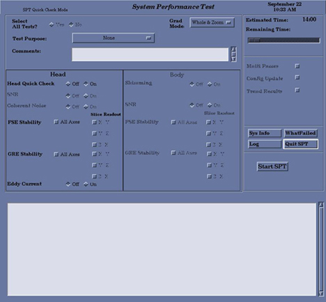

Proprietary to General Electric Company
Direction 5440000, Rev# 5
Module Version 3.0, Version Date 1/14/09
Proprietary to General Electric Company |
| Condition | Reference | Effectivity |
|---|---|---|
Cancel out of any previous exams. Click on [End Exam]. | - | - |
Remove any patient positioning devices before placing the nesting plate or other phantoms on the table. In particular, remove patient restraints or other devices that attach to the tracks along the edges of the cradle. | - | - |
| ||||
| Test functionality and system functionality may be adversely affected if the previous exam is not terminated. Click on [End Exam] to terminate any previous exam. It is not necessary to click on [New Pt] as SPT automatically enters the scan protocol when it is invoked via the MR Tools menu. | ||||
To start the SPT Full Test tool from the Service Browser, follow the steps on Illustration 1 below.
An SPT Test menu displays in a window on the desktop. Always use the Full Test Mode shown in Illustration 2.
Illustration 2: Field Engineer Test Selection - Example of Full Test Mode

For Select All Tests?, click [No].
To select a reason for the test, click the button (labeled None in above example) to the right of Test Purpose, and choose a reason from the list.
If desired, type any appropriate text in the Comments field.
For systems with a CRM Body Coil, select [Off] for Shimming in the Body section.
Click the [On] button next to the appropriate test(s) to run.
To select multiple passes of the test(s), select the [Multi Passes] button, and type the desired number of passes in the box that displays to the right.
Click [Start SPT] to begin.
If desired, click the [WhatFailed] button. An example of What Failed output can be found in Troubleshooting.
To exit SPT, click the [Quit SPT] button.
To view SPT results, select the Utilities tab on the Service Browser, then select [Report Manager].
Enter the Report Manager password and press [Enter]. (For more information, see Report Manager Tool.)
If appropriate, return to SPT for more selections.
Perform a TPS Reset after completing SPT to return the system to a normal working state.
If for any reason an SPT scan is aborted, shut down and reboot the system.